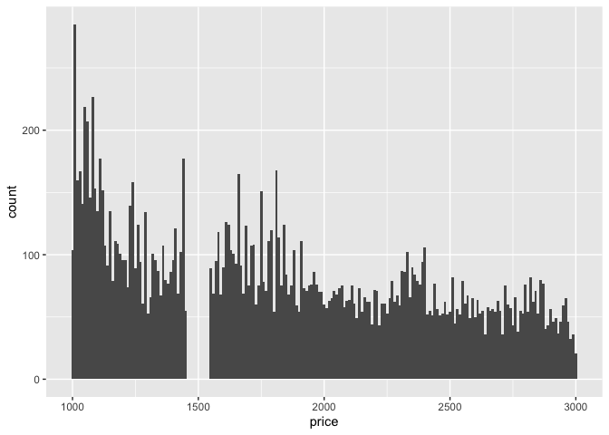
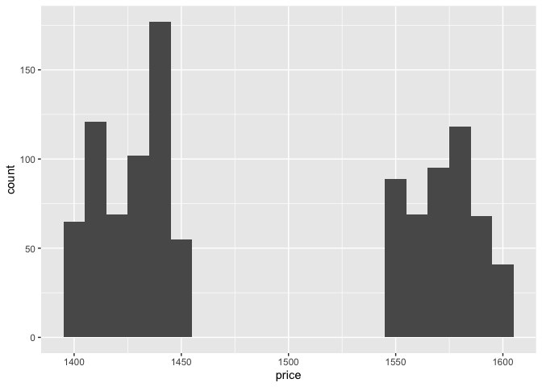
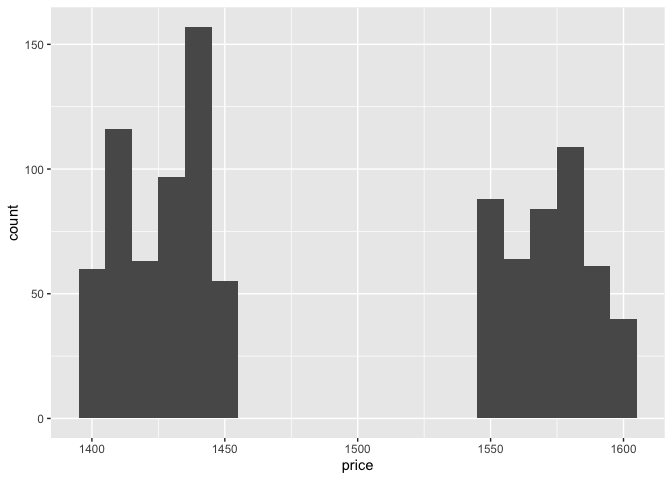

The goal of datadist is to …
Installation
You can install the development version of datadist from GitHub with:
# install.packages("pak")
pak::pak("nlharms414/datadist")Example
This is a basic example which shows you how to solve a common problem:
Diamonds Data from kaggle
The object kgl_diamonds contains five data of the 320 data sets available on kaggle when searching the platform for diamonds (Feb 2026).
At a first glance, the dimensions of these datasets are similar to each other, but not identical.
data("kgl_diamonds")
kgl_diamonds |> purrr::map(.f = dim)
#> $`shivam2503/diamonds`
#> [1] 53940 11
#>
#> $`lovishbansal123/diamond-dataset`
#> [1] 53940 11
#>
#> $`vittoriogiatti/diamondprices`
#> [1] 53940 10
#>
#> $`nancyalaswad90/diamonds-prices`
#> [1] 53943 11
#>
#> $`amirhosseinmirzaie/diamonds-price-dataset`
#> [1] 50000 10The dimensions are also very similar to the diamonds dataset in ggplot2:
library(ggplot2)
library(dplyr)
#>
#> Attaching package: 'dplyr'
#> The following objects are masked from 'package:stats':
#>
#> filter, lag
#> The following objects are masked from 'package:base':
#>
#> intersect, setdiff, setequal, union
dim(diamonds)
#> [1] 53940 10Are some of these datasets identical to the diamonds data?
kgl_diamonds |> purrr::map(.f = function(x) identical(x,diamonds))
#> $`shivam2503/diamonds`
#> [1] FALSE
#>
#> $`lovishbansal123/diamond-dataset`
#> [1] FALSE
#>
#> $`vittoriogiatti/diamondprices`
#> [1] FALSE
#>
#> $`nancyalaswad90/diamonds-prices`
#> [1] FALSE
#>
#> $`amirhosseinmirzaie/diamonds-price-dataset`
#> [1] FALSEWhen we look a bit closer, though, we find that “vittoriogiatti” has strong similarities to the diamonds data in ggplot2, as all of the names of the variables coincide and the numeric values are the same, even in the same order.
summary(kgl_diamonds[[3]] - diamonds)
#> carat cut color clarity depth
#> Min. :0 Mode:logical Mode:logical Mode:logical Min. :0
#> 1st Qu.:0 NA's:53940 NA's:53940 NA's:53940 1st Qu.:0
#> Median :0 Median :0
#> Mean :0 Mean :0
#> 3rd Qu.:0 3rd Qu.:0
#> Max. :0 Max. :0
#> table price x y z
#> Min. :0 Min. :0 Min. :0 Min. :0 Min. :0
#> 1st Qu.:0 1st Qu.:0 1st Qu.:0 1st Qu.:0 1st Qu.:0
#> Median :0 Median :0 Median :0 Median :0 Median :0
#> Mean :0 Mean :0 Mean :0 Mean :0 Mean :0
#> 3rd Qu.:0 3rd Qu.:0 3rd Qu.:0 3rd Qu.:0 3rd Qu.:0
#> Max. :0 Max. :0 Max. :0 Max. :0 Max. :0This is the same picture we get when we calculate the marginal distances between all pairs of variables between the two datasets:
wasserstein <- datadist(kgl_diamonds[[3]], diamonds)$dist
round(wasserstein, 2)
#> carat depth table price x y z
#> carat 0.00 0.77 0.60 0.21 0.46 0.08 0.09
#> depth 0.77 0.00 0.08 0.21 0.71 0.71 0.74
#> table 0.60 0.08 0.00 0.21 0.54 0.54 0.57
#> price 0.21 0.21 0.21 0.00 0.21 0.21 0.21
#> x 0.46 0.71 0.54 0.21 0.00 0.00 0.07
#> y 0.08 0.71 0.54 0.21 0.00 0.00 0.04
#> z 0.09 0.74 0.57 0.21 0.07 0.04 0.00We see 0s on the diagonal, indicating that these pairs of variables have the same marginal distribution, i.e. these variables have identical data. We also see that the difference between x and y is very small, indicating a high positive correlation between these two measurements, i.e. most diamonds are highly symmetric.
data error: y = 58.9 no diamonds priced between $1460 and $1540
diamonds |> filter(between(price, 1000, 3000)) |> ggplot(aes(x = price)) + geom_histogram(binwidth=10)
This matrix can be summarized in a score calculated as the minimum of the sum of all possible variable to variable mappings:
dscore(wasserstein)$score
#> [1] 0A value of 0 in this dscore indicates that all variables in the datasets have identical marginal distributions.
Datasets with an additional variable have the row numbers saved in a first column:
wasserstein_1 <- datadist(kgl_diamonds[[1]], diamonds)$dist
round(wasserstein_1, 2)
#> carat depth table price x y z
#> X 0.50 0.50 0.50 0.43 0.50 0.50 0.50
#> carat 0.00 0.77 0.60 0.21 0.46 0.08 0.09
#> depth 0.77 0.00 0.08 0.21 0.71 0.71 0.74
#> table 0.60 0.08 0.00 0.21 0.54 0.54 0.57
#> price 0.21 0.21 0.21 0.00 0.21 0.21 0.21
#> x 0.46 0.71 0.54 0.21 0.00 0.00 0.07
#> y 0.08 0.71 0.54 0.21 0.00 0.00 0.04
#> z 0.09 0.74 0.57 0.21 0.07 0.04 0.00They are, however, identical to each other:
wasserstein_12 <- datadist(kgl_diamonds[[1]], kgl_diamonds[[2]])$dist
round(wasserstein_12, 2)
#> X carat depth table price x y z
#> X 0.00 0.50 0.50 0.50 0.43 0.50 0.50 0.50
#> carat 0.50 0.00 0.77 0.60 0.21 0.46 0.08 0.09
#> depth 0.50 0.77 0.00 0.08 0.21 0.71 0.71 0.74
#> table 0.50 0.60 0.08 0.00 0.21 0.54 0.54 0.57
#> price 0.43 0.21 0.21 0.21 0.00 0.21 0.21 0.21
#> x 0.50 0.46 0.71 0.54 0.21 0.00 0.00 0.07
#> y 0.50 0.08 0.71 0.54 0.21 0.00 0.00 0.04
#> z 0.50 0.09 0.74 0.57 0.21 0.07 0.04 0.00More interesting:
wasserstein_4 <- datadist(kgl_diamonds[[4]], diamonds)
wasserstein_5 <- datadist(kgl_diamonds[[5]], diamonds)Are these maybe submissions that used the script to update the data?
kgl_diamonds[[4]] |> filter(between(price, 1400, 1600)) |> ggplot(aes(x = price)) + geom_histogram(binwidth=10)
kgl_diamonds[[5]] |> filter(between(price, 1400, 1600)) |> ggplot(aes(x = price)) + geom_histogram(binwidth=10)
Alas, no.
kgl_diamonds[[5]] |> ggplot(aes(x = x, y = y)) + geom_point()